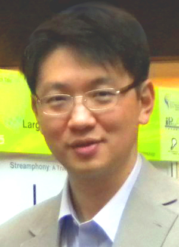

|
|
IEEE DCOSS 2011 - Keynote - June 28
GreenOrbs: Lessons Learned from Extremely Large Scale Sensor Network Deployment
"The world has just ten years to bring greenhouse gas emissions under control before the damage they cause becomes irreversible." This is a famous prediction raised by climate scientists and environmentalists recently. It reflects the increasing attention in the past decade from human beings on global climate change and environmental pollution. On the other hand, forest, which is regarded as the earth’s lung, is a critical component in global carbon cycle. It is able to absorb 10%~30% of CO2 from industrial emissions. Moreover, it has large capacity of water conservation, preventing water and soil loss, and hence reducing the chance of nature disasters like mud-rock flows and floods. Forestry applications usually require long-term, large-scale, continuous, and synchronized surveillance of huge measurement areas with diverse creatures and complex terrains. The state-of-arts forestry techniques, however, support only small-scale, discontinuous, asynchronous, and coarse-grained measurements, which at the same time incur large amount of cost with respect to human resource and equipments. WSNs have great potential in resolving the challenges in forestry. Under such circumstances, GreenOrbs is launched. The information GreenOrbs offers can be used as evidences, references, and scientific tools for human beings in the battle against global climate changes and environmental pollution.
The prototype system is deployed in the campus woodland of Zhejiang Forestry University. The deployment area is around 40,000 square meters. The deployment started in May 2009 and included 50 nodes. In November 2009 it was expanded to include 330 nodes. The system scale reaches 400 in April 2010, and 500 in Dec. 2010. The duty cycle of nodes is set at 8%. The network diameter is 12 hops. The sensor data are published online via the official GreenOrbs website. The Tianmu Mountain deployment includes 200 nodes and has been in continuous operation since August 2009. The deployment area is around 200,000 square meters. The duty cycle of nodes is set at 5%. The network diameter is 20 hops. We plan to deploy 4000 sensors in a city later this year. We learned a lot of lessons during the deployment of GreenOrbs. This experiment results in several publications, including ACM Sensys 2009, 2010, ACM Sigmetrics 2010, ICNP 2010, INFOCOM 2010, 2011 etc. In this discussion, we will focus on several open issues for extremely large scale deployment of sensor networks including routing, diagnosis, localization, link quality, and etc.
Yunhao Liu - Hong Kong University of Science and Technology

Yunhao Liu received his BS degree in Automation Department from Tsinghua University, China, in 1995, and an MS and a Ph.D. degree in Computer Science and Engineering at Michigan State University in 2003 and 2004, respectively. He holds the EMC Chair Professorship at Tsinghua University. He is a member of Tsinghua National Lab for Information Science and Technology, and the Director of Tsinghua National MOE Key Lab for Information Security. He is also a faculty at the Department of Computer Science and Engineering, the Hong Kong University of Science and Technology. He is currently serving as the Associate Editor of IEEE Transactions on Mobile Computing and IEEE Transactions on Parallel and Distributed Systems. He is now the Vice Chair of ACM China Council in charge of operation, and an ACM Distinguished Speaker.
|
|
|